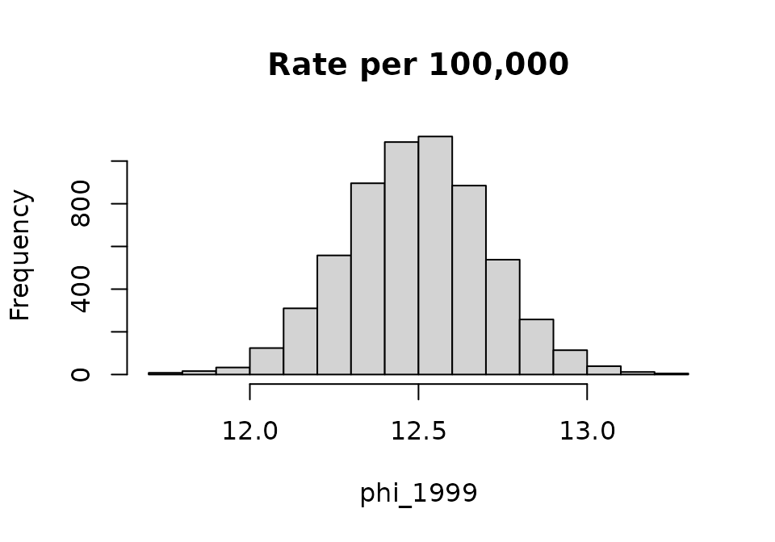
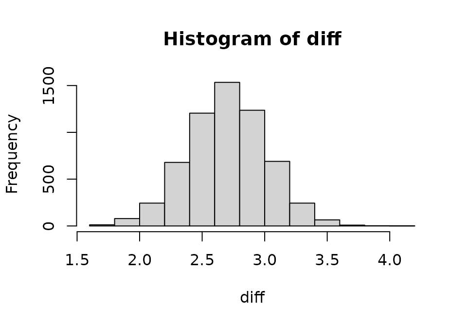
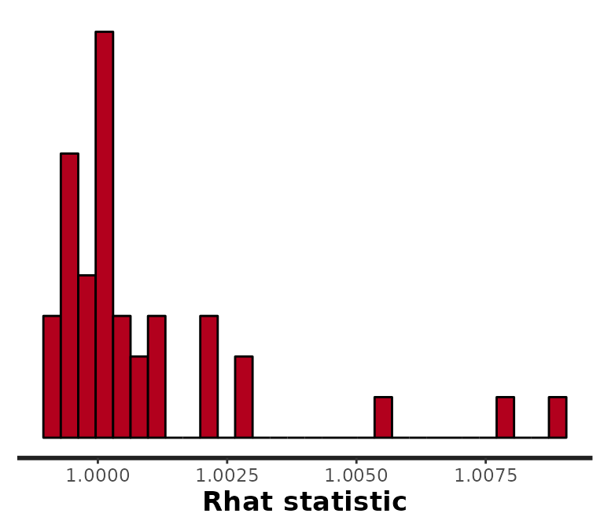
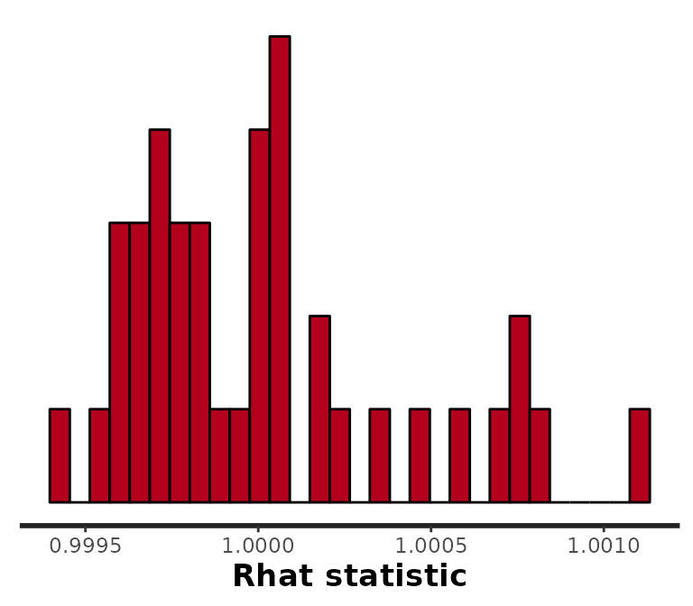

Markov chain Monte Carlo (MCMC): analysis and diagnostics
Source:vignettes/surveil-mcmc.Rmd
surveil-mcmc.RmdThis vignette shows surveil users how to access and review Markov chain Monte Carlo (MCMC) diagnostics from surveil models. This is not a complete resource for understanding MCMC, and readers are encouraged to seek additional resources.
Markov chain Monte Carlo (MCMC) algorithms, such as the Hamiltonian Monte Carlo algorithm that Stan (and therefore surveil) uses, aim to draw samples from the probability distribution specified by the user. The algorithm tries to explore the probability distribution extensively, and when successful, the resulting samples provide an approximate image of the target probability distribution.
Books that discuss MCMC include MacKay (2003) and Gelman et al. (2014); see also Stan Development Team (2022) and Vehtari et al. (2021). McElreath (2016) is helpful for learning Bayesian analysis using MCMC samples.
The following topics will be introduced here:
- Monte Carlo standard errors (MCSE)
- Effective sample size (ESS)
- The split Rhat statistic
- Divergent transitions
The first section examines MCMC samples from an example model in order to provide a foundation for the rest of the vignette. It is intended for users without prior exposure to MCMC analysis.
Example model
The discussion will make use of a model of U.S. cancer incidence rates, ages 10-14 from the cancer data:
data2 <- cancer[which(cancer$Age == "10-14"),]
fit <- stan_rw(data2, time = Year)
#> Distribution: normal
#> Distribution: normal
#> [1] "Setting normal prior(s) for eta_1: "
#> location scale
#> -6 5
#> [1] "\nSetting half-normal prior for sigma: "
#> location scale
#> 0 1
#>
#> SAMPLING FOR MODEL 'RW' NOW (CHAIN 1).
#> Chain 1:
#> Chain 1: Gradient evaluation took 1.2e-05 seconds
#> Chain 1: 1000 transitions using 10 leapfrog steps per transition would take 0.12 seconds.
#> Chain 1: Adjust your expectations accordingly!
#> Chain 1:
#> Chain 1:
#> Chain 1: Iteration: 1 / 3000 [ 0%] (Warmup)
#> Chain 1: Iteration: 1500 / 3000 [ 50%] (Warmup)
#> Chain 1: Iteration: 1501 / 3000 [ 50%] (Sampling)
#> Chain 1: Iteration: 3000 / 3000 [100%] (Sampling)
#> Chain 1:
#> Chain 1: Elapsed Time: 0.185 seconds (Warm-up)
#> Chain 1: 0.165 seconds (Sampling)
#> Chain 1: 0.35 seconds (Total)
#> Chain 1:
#>
#> SAMPLING FOR MODEL 'RW' NOW (CHAIN 2).
#> Chain 2:
#> Chain 2: Gradient evaluation took 7e-06 seconds
#> Chain 2: 1000 transitions using 10 leapfrog steps per transition would take 0.07 seconds.
#> Chain 2: Adjust your expectations accordingly!
#> Chain 2:
#> Chain 2:
#> Chain 2: Iteration: 1 / 3000 [ 0%] (Warmup)
#> Chain 2: Iteration: 1500 / 3000 [ 50%] (Warmup)
#> Chain 2: Iteration: 1501 / 3000 [ 50%] (Sampling)
#> Chain 2: Iteration: 3000 / 3000 [100%] (Sampling)
#> Chain 2:
#> Chain 2: Elapsed Time: 0.189 seconds (Warm-up)
#> Chain 2: 0.155 seconds (Sampling)
#> Chain 2: 0.344 seconds (Total)
#> Chain 2:
#>
#> SAMPLING FOR MODEL 'RW' NOW (CHAIN 3).
#> Chain 3:
#> Chain 3: Gradient evaluation took 8e-06 seconds
#> Chain 3: 1000 transitions using 10 leapfrog steps per transition would take 0.08 seconds.
#> Chain 3: Adjust your expectations accordingly!
#> Chain 3:
#> Chain 3:
#> Chain 3: Iteration: 1 / 3000 [ 0%] (Warmup)
#> Chain 3: Iteration: 1500 / 3000 [ 50%] (Warmup)
#> Chain 3: Iteration: 1501 / 3000 [ 50%] (Sampling)
#> Chain 3: Iteration: 3000 / 3000 [100%] (Sampling)
#> Chain 3:
#> Chain 3: Elapsed Time: 0.179 seconds (Warm-up)
#> Chain 3: 0.143 seconds (Sampling)
#> Chain 3: 0.322 seconds (Total)
#> Chain 3:
#>
#> SAMPLING FOR MODEL 'RW' NOW (CHAIN 4).
#> Chain 4:
#> Chain 4: Gradient evaluation took 1.4e-05 seconds
#> Chain 4: 1000 transitions using 10 leapfrog steps per transition would take 0.14 seconds.
#> Chain 4: Adjust your expectations accordingly!
#> Chain 4:
#> Chain 4:
#> Chain 4: Iteration: 1 / 3000 [ 0%] (Warmup)
#> Chain 4: Iteration: 1500 / 3000 [ 50%] (Warmup)
#> Chain 4: Iteration: 1501 / 3000 [ 50%] (Sampling)
#> Chain 4: Iteration: 3000 / 3000 [100%] (Sampling)
#> Chain 4:
#> Chain 4: Elapsed Time: 0.179 seconds (Warm-up)
#> Chain 4: 0.168 seconds (Sampling)
#> Chain 4: 0.347 seconds (Total)
#> Chain 4:Given 4 MCMC chains, 3,000 samples drawn from each chain, and the first .5 * 3000 = 1500 samples discarded as warmup, the fit object contains 6,000 MCMC samples. There is one parameter per year, each representing the level of cancer risk. There are 19 years of data (1999-2017). The number of samples required depends upon a number of factors, and in some cases the default settings may be more or less than is needed. One should draw enough samples that 1) the Monte Carlo standard errors are sufficiently small, and 2) the MCMC chains have had time to converge on a single distribution (these concepts will be discussed below).
The print method will return a summary of the marginal probability distributions for each year:
print(fit, scale = 100e3)
#> Summary of surveil model results
#> Time periods: 19
#> time mean lwr_2.5 upr_97.5
#> 1 1999 12.49594 12.08793 12.89596
#> 2 2000 12.62998 12.25798 12.99130
#> 3 2001 12.98121 12.62638 13.37791
#> 4 2002 12.85162 12.48476 13.21080
#> 5 2003 12.93041 12.56504 13.29037
#> 6 2004 13.20805 12.84961 13.58828
#> 7 2005 13.16727 12.80745 13.52867
#> 8 2006 13.37160 13.00378 13.74758
#> 9 2007 13.35138 12.96771 13.72449
#> 10 2008 13.47646 13.08636 13.85402
#> 11 2009 13.72628 13.35003 14.09411
#> 12 2010 14.06283 13.69558 14.44434
#> 13 2011 14.19842 13.81490 14.58661
#> 14 2012 14.42604 14.03427 14.80403
#> 15 2013 14.76398 14.36175 15.17016
#> 16 2014 15.18113 14.77775 15.60568
#> 17 2015 15.32577 14.93215 15.75423
#> 18 2016 15.51918 15.10457 15.95947
#> 19 2017 15.19557 14.75467 15.63363Using scale = 100e3 caused the results to be printed in terms of cases per 100,000 persons at risk.
The mean refers to the mean of the respective marginal probability distributions and the lwr_2.5 and upr_97.5 report the bounds of their central 95% quantile intervals (or credible interval: CI). The mean and CI can generally be interpreted as the “estimate” and its measure of uncertainty. However, one can visualize the entire probability distribution for any modeled quantity using a histogram of the MCMC samples.
MCMC analysis
We can examine the MCMC samples themselves to see how the values provided by the print method were calculated. The stanfit object created by Stan contains all of the MCMC samples:
samples <- fit$samples
class(samples)
#> [1] "stanfit"
#> attr(,"package")
#> [1] "rstan"Each row of the matrix phi is a sample from the joint posterior probability distribution of parameters, and each column represents a parameter (in this case, each parameter represents the level of cancer risk averaged over a given year). The values in any given column are samples from the marginal probability distribution for that parameter.
We can visualize the marginal distribution of cancer risk in 1999 for 10-14 year olds using a histogram; we will scale this in terms of cases per 100,000 persons at risk:
phi_1999 <- phi[,1] * 100e3
head(phi_1999)
#> [1] 12.53574 12.61787 12.24797 12.92929 12.00423 11.98524
hist(phi_1999, main = "Rate per 100,000")
To summarize this probability distribution, we can calculate the mean and select quantiles of the MCMC samples:
mean(phi_1999)
#> [1] 12.49594
quantile(phi_1999, probs = c(0.025, 0.1, 0.9, 0.975))
#> 2.5% 10% 90% 97.5%
#> 12.08793 12.22429 12.76627 12.89596If we repeated these steps for all years we would obtain the same information that was provided by print(fit).
In order to make inferences about quantities that involve more than one parameter, we need to use samples from the joint probability distribution. We can visualize the joint distribution using the plot method:
plot(fit, style = "lines", scale = 100e3)
#> Plotted rates are per 100,000
Each line is a visual depiction of a row from the matrix of MCMC samples phi.
When calculating quantities of interest, like annual percent change, cumulative change, or a measure of inequality, one must always use the joint distribution. This means that the quantity of interest needs to be calculated by working row-wise, which will result in a vector of samples for the quantity of interest. To illustrate how this is done, the following code creates a new quantity: the difference between risk in 2017 (the \(19^{th}\) year) and 1999 (the first observed year).
diff <- (phi[,19] - phi[,1]) * 100e3
hist(diff)
The principle at work here is that you never summarize MCMC samples until after all of the calculations are done. The mean of the probability distribution for the change in risk over this period is:
mean(diff)
#> [1] 2.699625Monte Carlo standard errors
An important difference between sampling with an MCMC algorithm and sampling from a pseudo random number generator (like rnorm) is that MCMC produces samples that are (often) correlated with one another other. (That is, in the process of drawing MCMC samples, movement around the probability distribution is serially correlated.) This means that for any number of MCMC samples, there is less information than would be provided by the same number of independently drawn samples. To evaluate how far the mean of our MCMC samples may plausibly be from the mean of the target probability distribution, we need to consider Monte Carlo standard errors (MCSEs) for each parameter.
Stan Development Team (2022) write:
Roughly speaking, the effective sample size (ESS) of a quantity of interest captures how many independent draws contain the same amount of information as the dependent sample obtained by the MCMC algorithm. The higher the ESS the better… For final results, we recommend requiring that the bulk-ESS is greater than 100 times the number of chains. For example, when running four chains, this corresponds to having a rank-normalized effective sample size of at least 400.
MCSEs are calculated as (Gelman et al. 2014)
\[MCSE(\phi) = \frac{\sqrt(Var(\phi))}{\sqrt(ESS(\phi))}\]
where \(Var(\phi)\) is the variance of the posterior distribution for parameter \(\phi\) and ESS is the effective sample size. ESS is adjusted for autocorrelation in the MCMC samples.
To view a histogram of MCSEs for all parameters in the surveil model, we can use rstan’s stan_mcse function:
rstan::stan_mcse(samples)
#> `stat_bin()` using `bins = 30`. Pick better value with `binwidth`.
Notice that instead of returning the MCSEs themselves, rstan divides the MCSEs by the scale of the probability distribution, \(\frac{MCSE(\phi)}{SD(\phi)}\). We can see that most of these values are under 0.04. We can always obtain smaller MCSEs by drawing a larger number of samples.
It may be more intuitive to examine the effective sample size (ESS) directly. You can start by printing the fit$samples object and examining the ESS directly. ESS is reported in the column labeled n_eff:
print(samples)
#> Inference for Stan model: RW.
#> 4 chains, each with iter=3000; warmup=1500; thin=1;
#> post-warmup draws per chain=1500, total post-warmup draws=6000.
#>
#> mean se_mean sd 2.5% 25% 50% 75% 97.5% n_eff Rhat
#> rate[1,1] 0.00 0.00 0.00 0.00 0.00 0.00 0.00 0.00 5476 1
#> rate[1,2] 0.00 0.00 0.00 0.00 0.00 0.00 0.00 0.00 5847 1
#> rate[1,3] 0.00 0.00 0.00 0.00 0.00 0.00 0.00 0.00 5439 1
#> rate[1,4] 0.00 0.00 0.00 0.00 0.00 0.00 0.00 0.00 6462 1
#> rate[1,5] 0.00 0.00 0.00 0.00 0.00 0.00 0.00 0.00 6398 1
#> rate[1,6] 0.00 0.00 0.00 0.00 0.00 0.00 0.00 0.00 6249 1
#> rate[1,7] 0.00 0.00 0.00 0.00 0.00 0.00 0.00 0.00 6514 1
#> rate[1,8] 0.00 0.00 0.00 0.00 0.00 0.00 0.00 0.00 6236 1
#> rate[1,9] 0.00 0.00 0.00 0.00 0.00 0.00 0.00 0.00 6239 1
#> rate[1,10] 0.00 0.00 0.00 0.00 0.00 0.00 0.00 0.00 6239 1
#> rate[1,11] 0.00 0.00 0.00 0.00 0.00 0.00 0.00 0.00 6099 1
#> rate[1,12] 0.00 0.00 0.00 0.00 0.00 0.00 0.00 0.00 7317 1
#> rate[1,13] 0.00 0.00 0.00 0.00 0.00 0.00 0.00 0.00 6612 1
#> rate[1,14] 0.00 0.00 0.00 0.00 0.00 0.00 0.00 0.00 7412 1
#> rate[1,15] 0.00 0.00 0.00 0.00 0.00 0.00 0.00 0.00 6984 1
#> rate[1,16] 0.00 0.00 0.00 0.00 0.00 0.00 0.00 0.00 5439 1
#> rate[1,17] 0.00 0.00 0.00 0.00 0.00 0.00 0.00 0.00 5989 1
#> rate[1,18] 0.00 0.00 0.00 0.00 0.00 0.00 0.00 0.00 5108 1
#> rate[1,19] 0.00 0.00 0.00 0.00 0.00 0.00 0.00 0.00 6835 1
#> sigma[1] 0.03 0.00 0.01 0.02 0.02 0.02 0.03 0.04 1731 1
#> log_lik[1,1] -5.25 0.01 0.57 -6.81 -5.40 -5.03 -4.87 -4.82 3819 1
#> log_lik[1,2] -5.26 0.01 0.55 -6.77 -5.41 -5.05 -4.88 -4.84 4323 1
#> log_lik[1,3] -5.87 0.01 0.96 -8.29 -6.33 -5.60 -5.13 -4.88 5121 1
#> log_lik[1,4] -5.27 0.01 0.53 -6.73 -5.41 -5.06 -4.91 -4.87 4358 1
#> log_lik[1,5] -5.26 0.01 0.51 -6.71 -5.41 -5.07 -4.92 -4.88 4147 1
#> log_lik[1,6] -5.46 0.01 0.67 -7.31 -5.69 -5.21 -4.98 -4.90 4716 1
#> log_lik[1,7] -5.30 0.01 0.56 -6.85 -5.47 -5.09 -4.93 -4.88 4334 1
#> log_lik[1,8] -5.32 0.01 0.55 -6.88 -5.48 -5.11 -4.94 -4.90 4477 1
#> log_lik[1,9] -5.22 0.01 0.47 -6.57 -5.33 -5.04 -4.92 -4.88 4152 1
#> log_lik[1,10] -5.22 0.01 0.47 -6.52 -5.31 -5.04 -4.92 -4.88 3801 1
#> log_lik[1,11] -5.19 0.01 0.40 -6.31 -5.30 -5.03 -4.92 -4.89 3171 1
#> log_lik[1,12] -5.29 0.01 0.52 -6.70 -5.43 -5.09 -4.95 -4.91 4262 1
#> log_lik[1,13] -5.21 0.01 0.44 -6.44 -5.29 -5.04 -4.94 -4.91 3285 1
#> log_lik[1,14] -5.21 0.01 0.42 -6.44 -5.31 -5.05 -4.95 -4.92 3335 1
#> log_lik[1,15] -5.22 0.01 0.43 -6.47 -5.30 -5.05 -4.96 -4.93 3037 1
#> log_lik[1,16] -5.41 0.01 0.61 -7.11 -5.58 -5.18 -5.00 -4.95 4264 1
#> log_lik[1,17] -5.24 0.01 0.42 -6.43 -5.32 -5.08 -4.98 -4.95 3061 1
#> log_lik[1,18] -5.80 0.01 0.91 -8.21 -6.17 -5.52 -5.12 -4.97 4696 1
#> log_lik[1,19] -5.49 0.01 0.70 -7.45 -5.71 -5.23 -5.01 -4.94 4963 1
#> lp__ -25.59 0.10 3.80 -33.89 -27.92 -25.24 -22.78 -19.23 1584 1
#>
#> Samples were drawn using NUTS(diag_e) at Sun Oct 1 21:24:17 2023.
#> For each parameter, n_eff is a crude measure of effective sample size,
#> and Rhat is the potential scale reduction factor on split chains (at
#> convergence, Rhat=1).sigma is the scale parameter for the model; the log_lik parameters are the log-likelihood of each observation. This is used for calculating WAIC (see ?surveil::waic). The lp__ parameter is always generated by Stan, it is the log-probability of the model.
If Stan is warning that Bulk ESS or tail area ESS is low and possibly unreliable, the first thing you can do is print results and inspect the ESS values. Depending on one’s purpose, the warning may be overly cautious. The next step is usually to increase the number of samples drawn (using the iter argument to stan_rw).
Rhat
A second important difference between sampling with MCMC and sampling with functions like rnorm is that with MCMC we have to find the target distribution. The reason rstan (and surveil) samples from multiple, independent MCMC chains by default is that this allows us to check that they have all converged on the same distribution. If one or more chains does not resemble the others, then there is a convergence failure.
To make the most of the information provided by these MCMC chains, we can split each of them in half, effectively doubling the number of chains, before checking convergence. This is known as the split Rhat statistic (Gelman et al. 2014). When chains have converged, the Rhat statistics will all equal 1.
Stan Development Team (2022) write:
We recommend running at least four chains by default and in general only fully trust the sample if R-hat is less than 1.01.
The default setting in surveil uses four MCMC chains, consistent with the above recommendation.
The Rhat statistic can be examined by printing the Stanfit object print(fit$samples). We can also visualize them all at once using rstan::stan_rhat:
rstan::stan_rhat(samples)
#> `stat_bin()` using `bins = 30`. Pick better value with `binwidth`.
Divergent transitions
Sometimes, MCMC algorithms are unable to provide unbiased samples that will converge on the target distribution given sufficient time. Stan’s MCMC algorithm will issue a warning when it encounters a region of the probability model that it is unable to explore. These warnings of “divergent transitions” should not be ignored, as they indicate that something may have gone wrong (Betancourt 2017a, 2017b). They will be printed to the console just after the model finishes sampling. Note that other MCMC platforms are simply unable to identify this bias (they will not issue a warning like Stan’s divergent transitions, even if the problem is present).
If you receive a divergent transition warning from a surveil model, here are some things to consider:
Draw more samples: if you also have low ESS, the divergent transitions may disappear by increasing the number of iterations (lengthening Stan’s adaptation or warm-up period). However, the default value of
iter = 3000should generally be sufficient.Raise
adapt_delta: you can also control a tuning parameter related to divergent transitions. Simply raising theadapt_deltavalue to, say, 0.99 or 0.999 if need be, may be sufficient; e.g.,stan_rw(data, time = Year, control = list(adapt_delta = 0.99, max_treedepth = 13)). (When raisingadapt_delta, raisingmax_treedepthmay improve sampling speed.) Raisingadapt_deltaever closer to 1 (e.g., to .9999) is generally not helpful.
There may be times when you are not able to prevent divergent transitions. This may occur when the population at risk is small and observations are particularly noisy; introducing the covariance structure (using core = TRUE) may make these issues more difficult to address. If your are working with multiple age groups, it may be the case that the age groups with very low case counts are the source of the problem. To determine if that is the case, you can run the model without that age group (or groups), or run a model for only that age group.
If there is a large number of divergent transitions, this is a serious warning. You may have made a mistake with your input data, or it could be that the model is just not very appropriate for the data.
If the number of divergent transitions is small (e.g., a handful out of 6,000 samples), and the ESS and Rhat are looking good, then you may determine that the amount of bias potentially introduced is acceptable for your purposes. You may want to report the issue along with results.
References
Betancourt, Michael. 2017a. “A Conceptual Introduction to Hamiltonian Monte Carlo.” arXiv Preprint arXiv:1701.02434.
———. 2017b. “Diagnosing Biased Inference with Divergences.” Stan Case Studies 4. https://mc-stan.org/users/documentation/case-studies/divergences_and_bias.html.
Donegan, Connor, Amy E. Hughes, and Simon J. Craddock Lee. 2022. “Colorectal Cancer Incidence, Inequality, and Prevention Priorities in Urban Texas: Surveillance Study with the ‘Surveil’ Software Pakcage.” JMIR Public Health & Surveillance 8 (8): e34589. https://doi.org/10.2196/34589.
Gelman, Andrew, John B Carlin, Hal S Stern, David B Dunson, Aki Vehtari, and Donald B Rubin. 2014. Bayesian Data Analysis. Third. CRC Press.
MacKay, David M. 2003. Information Theory, Inference, and Learning Algorithms. Cambridge University Press.
McElreath, Richard. 2016. Statistical Rethinking: A Bayesian Course with Examples in R and Stan. CRC Press.
Stan Development Team. 2022. “Runtime Warnings and Convergence Problems.” https://mc-stan.org/misc/warnings.html#bfmi-low.
Vehtari, Aki, Andrew Gelman, Daniel Simpson, Bob Carpenter, and Paul-Christian Bürkner. 2021. “Rank-Normalization, Folding, and Localization: An Improved R for Assessing Convergence of MCMC (with Discussion).” Bayesian Analysis 16 (2): 667–718.